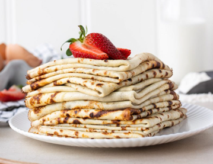

Godaste Lyxpannkakor

De här pannkakorna lagade min mamma till oss barn då vi kom hem från fotbollsträningen. De serverades med säsongens bär och nyvispad grädde.
Nu är det jag som lagar dem och serverar mina barn och barnbarn som äter dem med glupande aptit.
Ingredienser
- 2,5 dl vetemjöl
- 1/2 tsk Salt
- 6 dl Mjölk
- 3 ägg
- 100 g Smält smör
- Bär, frukt eller sylt till servering
Tillagning
- Smält smöret och blanda det med mjölken
- Blanda mjöl och salt i en bunke
- Vispa i hälften av mjölkblandningen och vispa till en slät smet
- Vispa i resten av mjölken och äggen
- Låt smeten vila i 10 minuter
- Stek tunna pannkakor i smält smör
- Severa med färska bär, frukt eller sylt och nyvispad grädde